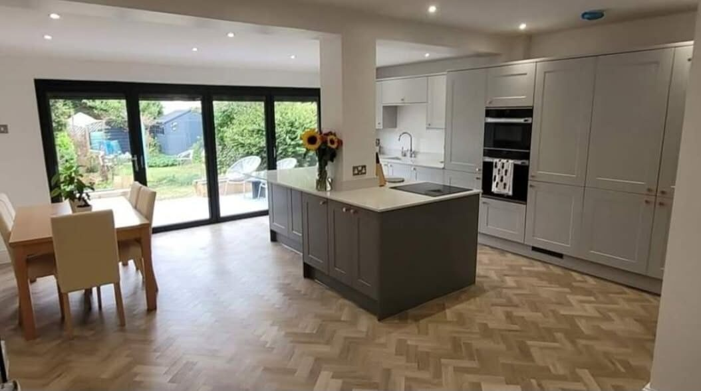
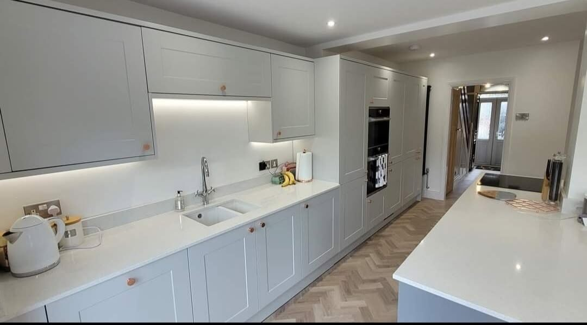
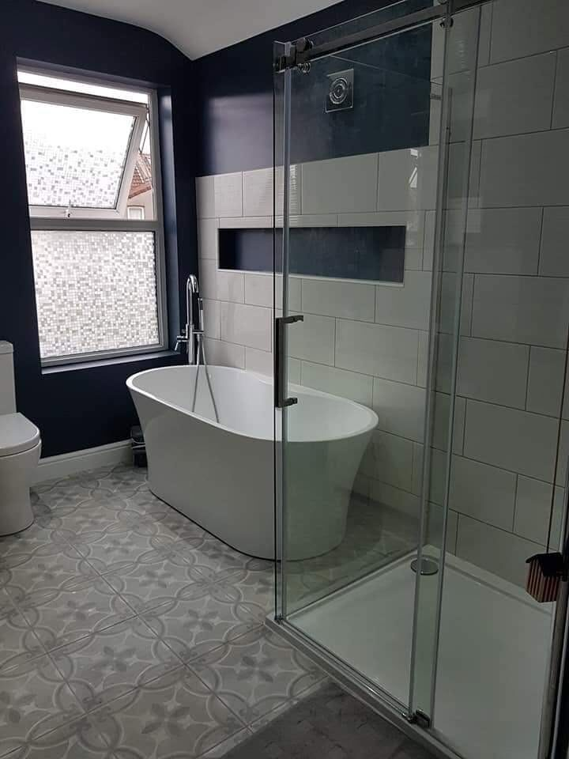
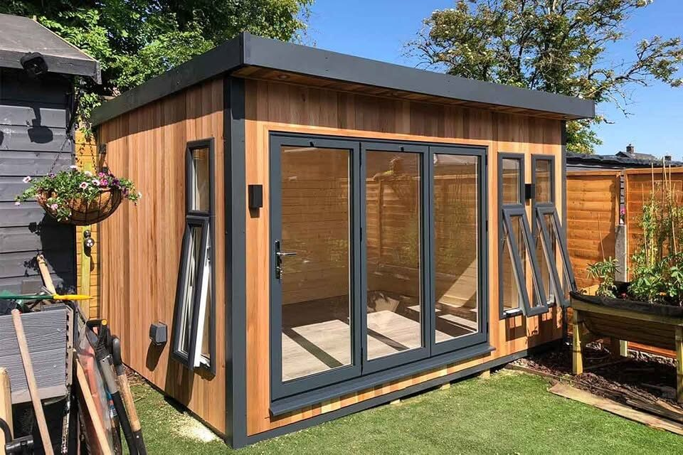
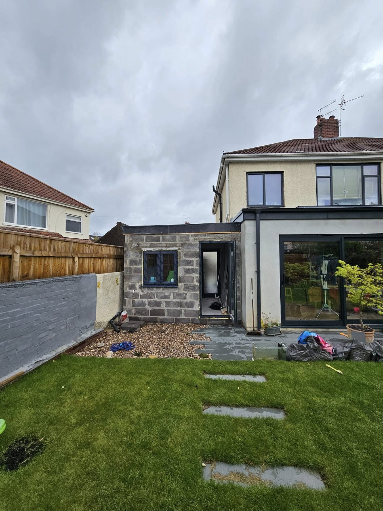
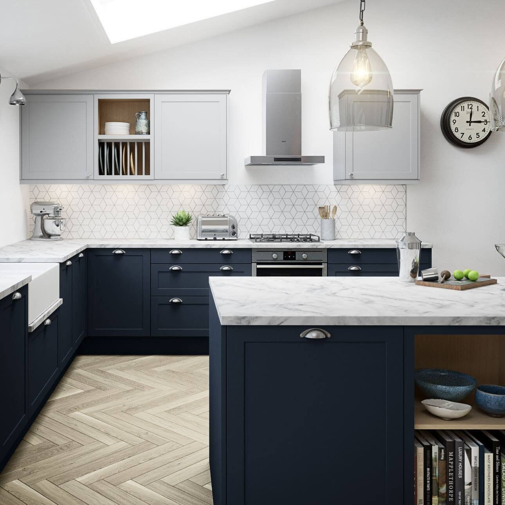
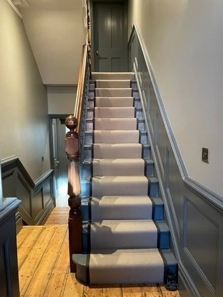
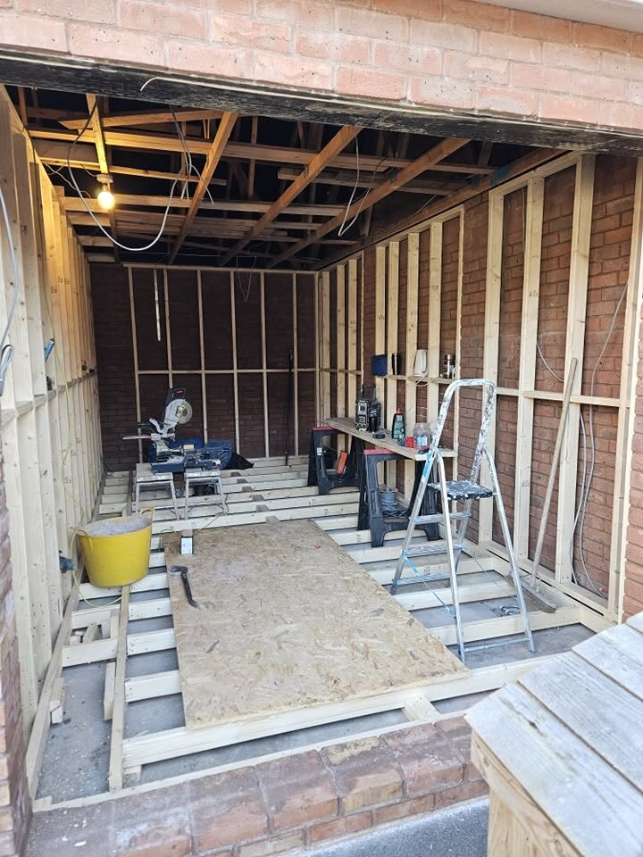
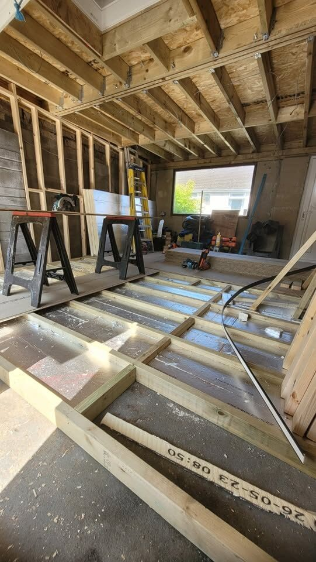

Home renovationsImprovements and extensions through the house

Kitchen projectsNew kitchens fitted around the way you live
Bathroom renovationsPractical layouts with a clean finish
Garden roomsTimber rooms and extra space in the garden
BUILDING & MAINTENANCE
From the kitchen to the garden room.
From renovations and extensions to kitchens, bathrooms, garage conversions and garden rooms, L. Bishop delivers high-quality work with a professional, reliable service.
Request a quote →

GARDEN ROOMS & EXTRA SPACE
A room that earns its place outside.
Cedar-clad garden rooms with proper doors, openings and a finish that sits well in the garden — built as extra living space, not a shed.
Discuss your project →

RECENT WORK
Work worth a closer look.
Kitchens, bathrooms, interiors, garden rooms, extensions and conversions.



FROM FRAME TO FINISH
The build, and the room it becomes.
Structural work and finished interiors sit side by side — framing, conversions and the kitchens that follow.
Discuss your idea →
BRISTOL BUILDING & MAINTENANCE
Local work, taken through properly.
Based in Bristol and covering the surrounding areas, L. Bishop handles renovations and home improvements from first layout through to the finished room.
01
Reliable
Clear communication and a professional approach on every project.
02
Professional
Kitchens, bathrooms, interiors and structural work finished to a high standard.
03
Local
Bristol and surrounding areas — garden rooms, conversions and extensions included.
REQUEST A QUOTE
Tell L. Bishop about your project.
Complete the form and it will open WhatsApp with your project details ready to send. This is a quote request, not a confirmed booking.
Call 07725 985873 for a free quote.
L. BISHOP BUILDING & MAINTENANCE
Ready to improve your home?
Bristol & surrounding areas